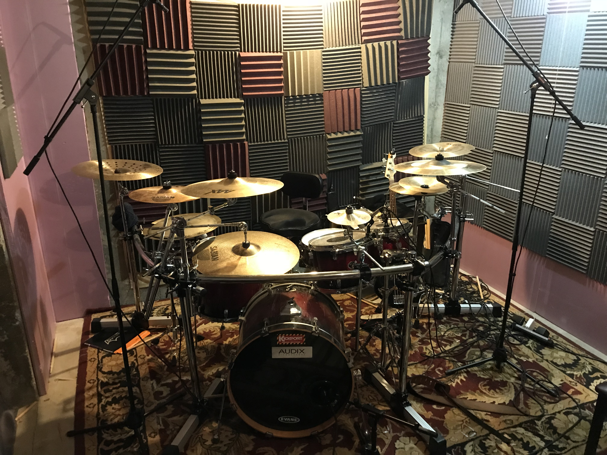
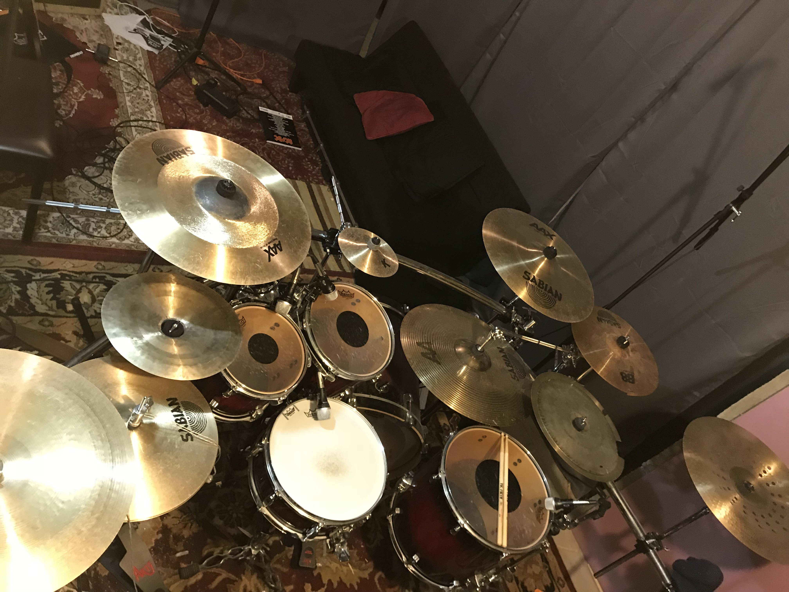
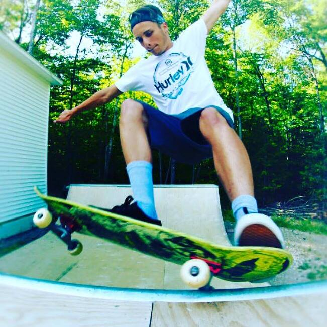
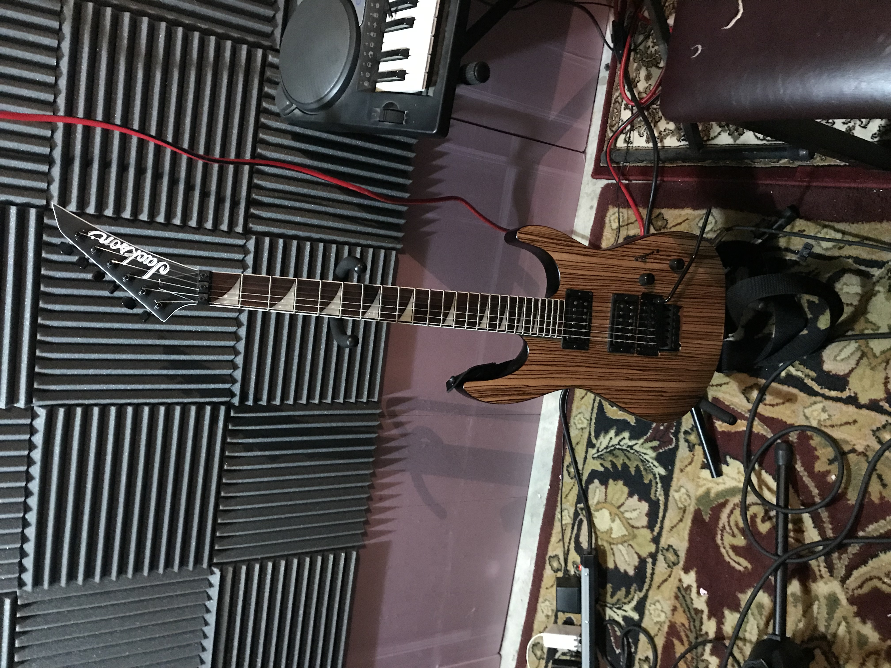

I got my first drum kit for christmas at the age of eight. One year later I began taking lessons until I turned eighteen. In january of 2018 I started a drum based youtube channel consisting of gear reviews and drum covers. Since my channel started I have been learning the ins and outs of recording drums and operating the software involved.
 I first got into skateboarding around the age of six by watching my older cousin. However after a few years a quit for a long period of time and didn't pick is back up until 2014 I had to quit again my senior year of high school due to a football injury and am just now getting back into it.
I have been playing guitar on and off my whole life because my dad plays guitar I never really took it seriously and only took one year of lessons in 2014 while guitar isn't my main focus it is still an enjoyable break from drums some days. Now that I have my own guitar(pictured below) I have begun recording original music.
